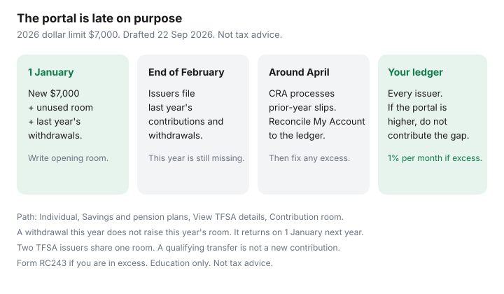

Personal Finance · Canada
How to Read TFSA Contribution Room in CRA My Account (and Why the Number Lags)
CRA My Account will show a TFSA contribution-room figure. It will often be wrong for the decision you are about to make this week. Issuers file last year’s activity by the end of February. CRA has said the useful refresh for that prior year is around April. Contributions you made last Tuesday may not be in the number at all. People who trust the portal either sit on unused room for months or contribute twice.
This is how to read the screen, why it lags, and the ledger that should drive a payday transfer. It is contribution mechanics, not a fund pick. Date-stamped 22 Sep 2026. Not tax advice. The automation calendar that uses this number is TFSA contributions.
Disclosure: Brokerage TFSA accounts and bank TFSA savings accounts are offer types. Saving Optimizer may later add partner links. We do not currently claim an issuer partnership. This is education, not tax or investment advice. Confirm room with your own records and with CRA before you set a recurring transfer.
Key takeaways
- Path that matches CRA’s contribution-room instructions: sign in, then Individual, Savings and pension plans, View TFSA details, Contribution room. Menus move. The room page is the authority if a label differs.
- The 2026 dollar limit is $7,000. Your room is that limit plus unused room from earlier years plus withdrawals from last year, minus contributions already made this year.
- Issuer slips for a calendar year are due by the end of February the next year. CRA points to an April refresh before you lean on My Account for the prior year. This year’s deposits may be missing.
- A ledger with date, issuer, in, and out beats the portal. If the portal is higher than the ledger, do not contribute the difference.
- Excess is taxed at 1% per month on the highest excess in the month. Withdraw it and file a TFSA return (Form RC243). Do not wait for a spring letter.
Where the TFSA room figure lives in CRA My Account
You need a CRA account first. Sign-In Partner or a CRA user ID — not a hope that GCKey alone opened the tax account. Setup steps are CRA My Account. Once you are in, CRA’s own contribution-room instructions (used for our TFSA guide and re-checked for this draft 22 Sep 2026) describe this route:
- Sign in to My Account.
- Go to Individual.
- Open Savings and pension plans.
- View TFSA details.
- Read Contribution room.
Use the calculator that says you can calculate using your own records when a banner warns that slips are still arriving. That banner is the product. The dollar beside it is a draft until your ledger agrees. RRSP deduction limit and FHSA participation room live in the same neighbourhood of the account. They are different numbers. Do not copy the RRSP limit into a TFSA form because both say “room.”
On 1 January the new dollar limit is added. For 2026 that limit is $7,000, the same dollar limit CRA lists for 2024 and 2025. Someone who was 18 or older and resident every year since 2009, with no contributions and no withdrawals, has a large cumulative figure. Non-resident years and prior excess change it. Still verify. “I have never contributed” is a hypothesis, not a room number, if an old bank TFSA exists.
Why the number lags issuer reporting by months
Financial institutions report TFSA contributions and withdrawals to CRA. CRA’s pages say that reporting for a year arrives by the end of February of the following year, and that the clearer My Account view of the prior year is after processing around April. Two lags follow:
- Last year is late. In January, February, and often March, My Account may not yet show every 2025 contribution or withdrawal. A room figure that ignores a December deposit is too high. Contributing that “room” creates excess.
- This year is mostly absent. A March 2026 contribution may not reduce the displayed room until the 2026 slips are processed in 2027. The portal can look generous all year while your PAD has already used the room.
Withdrawals have a second clock. A withdrawal does not create room until 1 January of the next year, and the issuer still has to report it. Taking $3,000 out in June 2026 does not raise the 2026 figure in July, even after the portal “updates.” The June withdrawal becomes 2027 room, generally visible with confidence after the 2027 processing of 2026 slips. If you need the cash back sooner, you need unused 2026 room that was never withdrawn-and-replaced. That trap is TFSA withdrawals.

How to keep your own contribution log that beats the lag
One sheet, or one note in the same place as the budget. Columns:
| Column | What you write |
|---|---|
| Date settled | The day the issuer accepted it, not the day you clicked. Year-end EFTs can miss 31 December. |
| Issuer | Bank TFSA and brokerage TFSA are separate rows. They share one room. |
| In | Contributions, including a refund lump sum and every payday PAD. |
| Out | Withdrawals to a non-TFSA account. Not a direct transfer to another TFSA. |
| Running room | Start from 1 January: unused + this year’s dollar limit + last year’s withdrawals. Subtract ins. Do not add this year’s outs. |
Example, labelled: room on 1 January 2026 is $7,000. You contribute $500 on each of 10 paydays ($5,000) and a $1,500 refund in May. The ledger says $500 left. My Account might still show $7,000 because 2026 slips have not been filed. The next $500 PAD is fine. A $2,000 “top-up because the website said I had room” is excess. If the portal shows less than the ledger, stop and find the missing contribution before you add money. A forgotten issuer is the usual explanation.
Over-contribution penalties and how Canadians accidentally trigger them
CRA charges 1% per month on the highest excess TFSA amount in that month, for each month the excess exists. A deposit and a withdrawal in the same month can still produce a one-month tax, because the tax uses the highest excess during the month. Withdraw the excess as soon as you see it. File a TFSA return, Form RC243 (and the schedule that lists the months). Waiting for CRA to notice does not pause the 1%.
Accidents that show up in ordinary households:
- Trusting My Account in March, before the April refresh of last year’s slips.
- A payday PAD that keeps running after a lump-sum refund contribution. Both are contributions. See refund triage before you drop a refund into the TFSA.
- Replacing a withdrawal in the same calendar year without unused room.
- One spouse contributing into the other spouse’s TFSA in a way the issuer records against the wrong person — or, more often, both adults funding one TFSA because “it’s the household account.” Room is individual. There is no joint TFSA.
- A non-resident year. Room does not accrue for years you were not a resident. The portal is the place to see CRA’s view. Your residency history still needs a human read if you moved.
Multi-issuer TFSAs: add carefully
You may hold more than one TFSA. The room is one number across all of them. The bank cannot see the brokerage. Add the ledgers. Do not add the issuers’ “available contribution” widgets if those widgets only know their own account. They will both offer you the full $7,000.
A qualifying transfer from one TFSA issuer to another, done as a transfer and not as a withdrawal, is not a contribution and does not use room. The moment you withdraw to chequing and deposit at the new issuer, you have a withdrawal (room comes back next 1 January) and a new contribution (uses room now). If you were at the limit, that “simple move” is excess until next year. Ask the new issuer for a TFSA transfer form. Do not e-Transfer the TFSA to yourself and call it a transfer.
Annual checklist before you automate another transfer
- 1 January: write opening room. New dollar limit plus unused room plus last year’s withdrawals. Resize the PAD to room divided by pays left. Do not leave last year’s PAD amount running on faith.
- Before every lump sum (bonus, refund, gift): ledger room minus the lump sum minus PADs still scheduled this year. If that is negative, lower the PAD the same day.
- The day you withdraw: pause the PAD. Log the out. Do not add the out back into this year’s room.
- April: reconcile My Account to the ledger once prior-year slips have had time to process. Fix excess immediately if the portal and the sheet disagree and the sheet was the one that was over.
- 15 December: last in-year transfer must settle before year-end. A click on 31 December can count next year. Our automation guide uses a mid-December cutoff because EFTs can take 2–3 business days.
- Spouse check: two ledgers, two PADs, two room numbers. A household does not get $14,000 in one person’s account.
Sources & date stamps
- CRA, TFSA contribution room — 2026 dollar limit $7,000; own-records calculation; April processing note for the prior year (used 22 Sep 2026, consistent with our automation guide’s 21 Sep 2026 read).
- CRA, Contributing and withdrawing — withdrawals add room on 1 January of the next year; issuers report by the end of February.
- CRA, Tax payable on excess TFSA amount — 1% per month on the highest excess in the month; TFSA return Form RC243.
- CRA My Account path — Individual, Savings and pension plans, View TFSA details, Contribution room. If the menu has moved, follow the contribution-room page rather than a screenshot.
Frequently asked questions
Where do I see TFSA room in CRA My Account?
Sign in, then Individual, Savings and pension plans, View TFSA details, Contribution room. Use the own-records calculator when CRA warns that slips are still coming in. If the labels have moved, follow CRA’s contribution-room page rather than an old screenshot.
Why is my CRA room figure different from my bank?
The bank sees only its own TFSA. CRA is waiting on slips from every issuer, due by the end of February for the prior year, and often shows a useful prior-year picture after April processing. This year’s contributions may be missing entirely. Your ledger of every issuer is the number to obey when it is lower than the portal.
What is the TFSA limit for 2026?
The dollar limit is $7,000. Your room also includes unused room from earlier years and withdrawals made in 2025, which returned on 1 January 2026, minus contributions you have already made in 2026.
What if I over-contributed?
Withdraw the excess as soon as you know. The tax is 1% of the highest excess in each month it existed, including a month where you deposited and removed the excess. File a TFSA return, Form RC243. Do not wait for My Account to look clean.
Do two TFSA accounts double my room?
No. Room is per person, across every TFSA you hold. A qualifying transfer between issuers is not a new contribution. Withdrawing to your chequing account and depositing at a new issuer is a withdrawal plus a contribution.